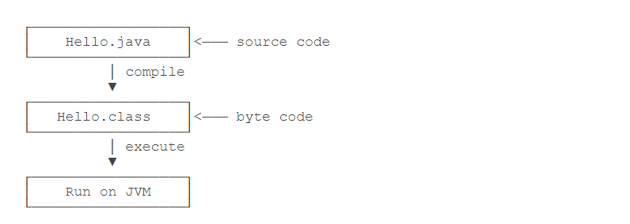

Contents
1.2. 第一个Java程序¶
package helloJava;
public class hellojava {
private static String say = "我 要学会你。" ;
public static void main(String[] args) {
// TODO 自动生成的方法存根
System.out.println("你好Java " + say);
}
}
//输出结果
你好Java 我 要学会你。
1.2.1. 如何运行Java程序¶
Java源码本质上是一个文本文件，我们需要先用javac把Hello.java编译成字节码文件Hello.class，然后，用java命令执行这个字节码文件： 
因此，可执行文件javac是编译器，而可执行文件java就是虚拟机。
第一步，在保存Hello.java的目录下执行命令javac Hello.java：
$ javac Hello.java
如果源代码无误，上述命令不会有任何输出，而当前目录下会产生一个Hello.class文件：
$ ls
Hello.class Hello.java
第二步，执行Hello.class，使用命令java Hello：
$ java Hello
Hello, world!
注意：给虚拟机传递的参数Hello是我们定义的类名，虚拟机自动查找对应的class文件并执行。
有一些童鞋可能知道，直接运行java Hello.java也是可以的：
$ java Hello.java
Hello, world!
这是Java 11新增的一个功能，它可以直接运行一个单文件源码！
需要注意的是，在实际项目中，单个不依赖第三方库的Java源码是非常罕见的， 所以，绝大多数情况下，我们无法直接运行一个Java源码文件，原因是它需要依赖其他的库。
1.2.3. Java主类结构¶
java 语言是面对对象的程序设计语言，java程序的基本组成单元是类，类体中又包括属性与方法两个部分
每一个应用程序都必须包含一个main()方法，含有main()方法的类成为主类。
下面介绍java主类结构
package Number;
public class Frist {
static String s1="你好";
public static void main(String[] args) {
String s2 = "Java";
System.out.println(s1);
System.out.println(s2);
}
}
//输出结果
你好
Java
1.2.4. 包声明¶
一个java应用程序是由若干个类组成的， 语句package Number 为声明该类所在的包
package为包的关键字
1.2.5. 声明成员变量和局部变量¶
通常将类的属性称为类的全局变量（成员变量）
将方法中的属性称为局部变量，
全局变量声明在类体中，局部变量声明在方法体中，
局部变量和全局变量有各自的应用范围，上面s1是成员变量
s2是局部变量
1.2.6. 导入API类库¶
在java语言中可以通过import关键字导入相关的类，
在JDK的API中（应用程序接口）提供了130多个包。入java.awt、java.io等，
可以通过JDK的API文档来查看这些类，其中主要包括类的继承结构、类的应用成员变量表、构造方法
表等，并对每个变量的使用目的作了详细的描述，API文档是程序开发人员不可或缺的工具。
1.2.7. 变量¶
数据类型 变量名 [=初始值];
示例代码
public class HelloWorld {
// 声明int型成员变量
int y;
public static void main(String[] args) {
// 声明int型局部变量
int x;
// 声明float型变量并赋值
float f = 4.5f;
// x = 10;
System.out.println("x = " + x);// 编译错误，局部变量 x未初始化
System.out.println("f = " + f);
if (f < 10) {
// 声明型局部变量
int m = 5;
}
System.out.println(m); // 编译错误
}
}